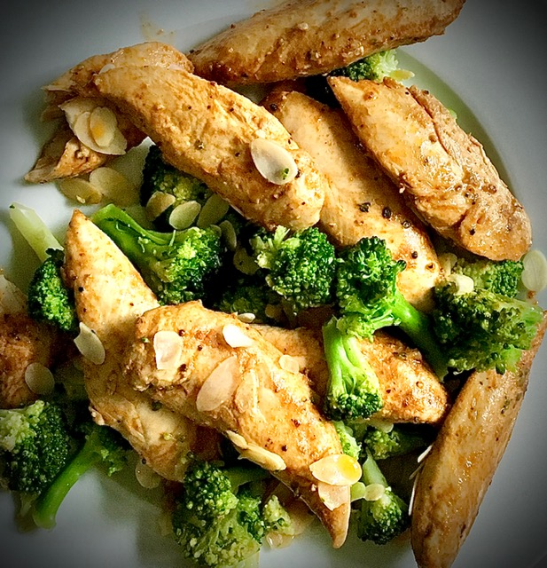

Odin's Chicken and Broccoli

Description
This chicken is the best in town and it only takes you 20 minutes.
It's so unbelievable tasty.
Preparation Time
20 mins
Cooking Time
10 mins
Serves
4
Difficulty
Easy
Ingredients
- 450g chicken breast (about 2 breasts), cubed
- 2 cloves garlic, minced
- 2cm piece peeled fresh ginger, minced
- 15ml soy sauce
- 25g granulated sugar
- 10g teaspoon cornflour
- 7g salt and freshly ground black pepper
- 15ml dry sherry
- 15ml dark sesame oil
- 3 tbsp vegetable oil
- 450g broccoli, trimmed sliced stalks
(about .5cm thick) and medium florets
(keep the 2 cuts separate)
Steps
- Toss the chicken with about half the garlic and ginger, the soy sauce, sugar, 1 teaspoon of the cornflour, 5g of the salt, the sherry, and the sesame oil in a bowl. Marinate at room temperature for 15 minutes. Mix the remaining cornflour with the 80ml broth or water.
- Heat a large nonstick skillet over high heat. Add 1 tablespoons of the oil and heat. Add the broccoli stems, and stir-fry for 1 min. Add the florets and the remaining garlic, ginger, 30ml of water, and season with pinch of salt, and pepper, to taste. Stir-fry until the broccoli is bright green but still crisp, about 2 minutes. Transfer to a plate.
- Heat the skillet again, and add 2 more tablespoons of oil. Add the chicken and stir-fry until the chicken loses its raw color and gets a little brown, 3 to 4 minutes. Return the broccoli to the pan and toss to heat through. Stir in the reserved cornflour mixture and bring to a boil to thicken. Add more water to thin the sauce, if necessary. Taste and season with salt and pepper, if you like. Mound the stir-fry on a serving platter or divide among 4 plates; serve with rice.
Recipe from foodnetwork.co.uk
back